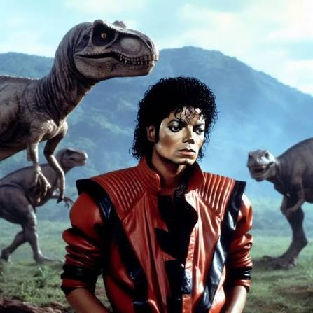

POLEMICAS NA COPA DO MUNDO!
Por: Nathalia e Ana Carolina
Cristiano Ronaldo trai sua esposa Georgina com a Shakira! confira a imagem.
TOUR PELO MUNDO.
Por: Nathalia e Ana Carolina
Cristiano Ronaldo trai sua esposa Georgina com a Shakira! confira a imagem.

Por: Nathalia e Ana Carolina
Michael Jackson aparece ao lado de dinossauro, confira abaixo;